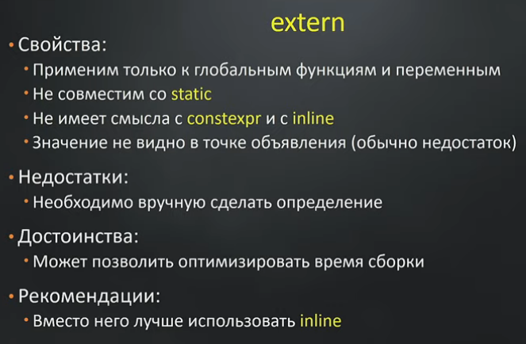
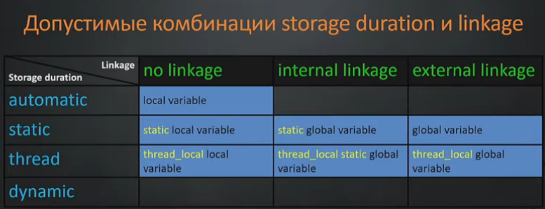
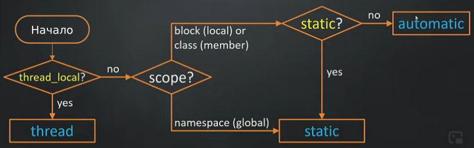
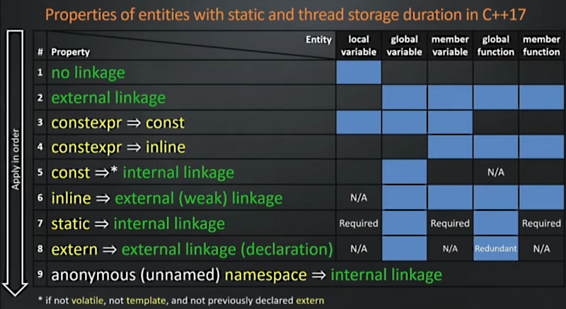
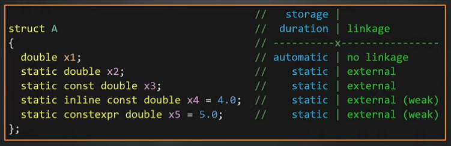

Подробно о том, по каким принципам происходит сборка бинарника в C++ и как надо понимать где будет размещаться переменная при компиляции программы из *.cpp и *.h файлов, можно посмотреть в русскоязычном видео:
Михаил Матросов — Спецификаторы, квалификаторы и шаблоны
Несмотря на устрашающее название, Михаил подробно и доходчиво объясняет азы понимания привычных спецификаторов, на что они влияют.
Единица трансляции
Программа собирается из единиц трансляции. Единица трансляции - это *.cpp файл, в котором вместо директив #include вставлен исходный код всех заинклюденых *.h-файлов. Единица трансляции компилируется в объектный файл (*.o в Linux, *.obj в Windows). Все единицы тренсляции компилируются независимо. Если в единице трансляции объявлена переменная или функция, то само определение переменной или функции может находиться в другой единице трансляции.
Когда происходит линковка, линковщик следит за тем, чтобы для всех единиц трансляции, для всех объявлений переменной или функции существовало определение. Если определения нет в текущей единице трансляции, линковщиком будет производиться поиск определения в других единицах трансляции. Все единицы трансляции, отличиные от текущей, равнозначны, нет приоритетных.
Объявления и определения
Для функций (и методов объектов) определение и объявление делается всем привычным синтаксисом:
// Определение функции (function definition)
int sqr(int x)
{
return x*x;
}
// Объявление функции (function declaration)
int sqr(int x);
Для переменных объявление и определение выглядит следующим образом:
// Определение переменной (variable definition)
int n;
// Объявление переменной (variable declaration)
extern int n;
Определение переменной может сопровождаться инициализацией, а может и не сопровождаться, как в коде выше.
Так как объявления переменных и функций обычно размещают в *.h-файлах, а эти *.h-файлы могут быть заинклюдены несколько раз в *.cpp-файлы, т. е. в разные единицы трансляции, то можно сказать, что объявлений одной и той же переменной/функции может быть сколько угодно, а определение может быть только одно.
Internal и external linkage
Понятие Internal и external linkage - это то, каким образом происходит связывание определений и объявлений. Если связывание происходит в пределах одной единицы трансляции, то это internal linkage. Если связывание происходит между разными единицами трансляции, то это external linkage.
Пример Internal linkage для функции sqr():
first.h
int sqr(int x); // Объявление
first.cpp
#include "first.h"
int sqr(int x) // Определение
{
return x*x;
}
bool anyFunction()
{
int a=sqr(5); // Использование
}
Пример External linkage для функции sqr():
first.h
int sqr(int x); // Объявление
first.cpp
#include "first.h"
int sqr(int x) // Определение
{
return x*x;
}
second.cpp
#include "first.h" // "Вытягивается" из заголовка код объявления
int anyFunction()
{
int a=sqr(5); // Использование определения (после линковки)
}
Еще есть связывание No linkage. Оно означает, что на этап линковки никакой информации о данной сущности не передается. Обычно тип No linkage имеют локальные переменные функций. Они существуют только внутри функций, и ни в пределах единицы трансляции, ни между единицами трансляции о них инфомация не передается.
Еще есть связывание вида external (weak) linkage. Это свазывание включается путем применения к функции ключевого слова inline. Оно означает, что определение должно существовать в каждой единице трансляции. Противоположность ему - ключевое слово extern, которое говорит о том, что определение должно существовать только в одной единице трансляции. Особенности применения extern и inline приведены в следующем слайде:

Спецификатор static для функции - указание на Internal linkage
Язык C++ - это контекстно-зависимый язык. А это значит, что одно и то же ключевое слово может по-разному трактоваться в зависимости от того, в каком месте выражения оно используется. Привычное использование спецификатора static - внутри функции перед переменной, благодаря чему переменная становится статической, и ее значение сохраняется между вызовами функции. Однако, ключевое слово static может использоваться и для других целей.
Если написать спецификатор static перед определением функции, то это будет означать требование, чтобы такая функция имела Internal linkage.
Другими словами, объявленная таким образом функция будет доступна только в пределах своей единицы трансляции. И поэтому, нет смысла делать объявление статической функции в *.h-файле заголовка.
Более того, все ссылки на static функции обычно разрешаются на стадии компиляции (еще до стадии линковки) и в генерируемом объектном файле не упоминаются вообще, т.е. линкер даже не знает об их существовании.
Отсюда еще одно следствие: нет никакой необходимости беспокоиться о глобальных конфликтах имен при объявлении статических функций.
Примечание: здесь речь идет именно о static-функциях, которые остались в языке C++ как наследие от языка C. К static-методам описанное выше поведение не имеет отношения.
Виды времени жизни объектов (storage duration)
Automatic storage duration
Если объект (переменная) объявлен внутри функции или внутри какого-либо скоупа (scope - это все, что находится внутри каких-либо парных фигурных скобок {...}), то его время жизни определяется автоматически: он создается внутри скоупа, и уничтожается при выходе из скоупа. Обычно говорят, что такой объект живет "на стеке".
Static storage duration
Если объект (переменная) объявлена со спецификатором static, то где бы она ни была объявлена, она будет создана при старте программы, и уничтожена при завершении программы. (Здесь демонстрируется контекстная зависимость ключевого слова static. Будучи используемой в объявлении объекта/переменной, смысл слова static совершенно другой, нежели его использование с объявлением функции или метода). (Уточнить! Возможно, выделяться память будет при создании первого экземпляра объекта, содержащего static свойство).
Thread storage duration
То же самое что и static duration, только применительно не к программе а к треду.
Dynamic storage duration
Создание/удаление объекта в куче через new/delete.
Все виды времени жизни сведены в следующую таблицу:
Важно учитывать: понятие storage duration относится к моменту выделения памяти для объекта, а не к моменту инициализации этой памяти каким-либо значением. Инициализация объекта - это отдельная большая тема в C++ со своими хитрозакрученными правилами.
Допустимые комбинации linkage и времени жизни (storage duration)
Допустимые комбинации с пояснениями приведены на следующем слайде:

Там где клетки заполнены синим фоном, там находится допустимая комбинация.
Алгоритм определения вида времени жизни объекта
Ниже приведен алгоритм определения вида времени жизни объекта (storage duration). В этом алгоритме нет dynamic storage duration, так как в таком случае время жизни определяется использованием new/delete.

Сводная таблица соответствия сущности языка C++,
специфкаторов/квалификаторов, и linkage
Михаил составил следующую обобщенную таблицу, по которой можно пределить, какой тип linkage будет иметь переменная или функция в зависимости от ее размещения в коде и применяемых спецификаторов/квалификаторов.

Пользоваться таблицей нужно так.
Вначале выбирается сущность (Entity). Например, global variable. Двигаться надо сверху вниз, более низкие строки "перезаписывают" информацию, которая получается для данной сущности. Там где есть синияя заливка, там допустимое значение. Видно, что для global variable первое значение external linkage. Это значит, что для такой переменной, по-умолчанию используется external linkage.
Если глобальная переменная определена с модификатором constexpr, то этот constexpr неявно приводит к тому, что данная переменная какбы имеет модификатор const. (Желтый цвет - это не конец рассуждений, а промежуточный этап. Конец рассуждений обозначатся зеленым цветом).
Далее, если глобальная переменная имеет модификатор const (в явном виде, и полученный через constexpr), то такая переменная имеет internal linkage. Звездочка показывает, что это утверждение справедливо, если переменная не доступна для изменения извне программы (нет модификатора volatile) и не является шаблонной.
Если к глобальной переменной добавляется модификатор inline, то такая переменная имеет external (weak) linkage. (Этот тип linkage объясняется в видео лекции).
Если к глобальной переменной добавлен модификатор static, то такая переменная имеет internal linkage.
Если к глобальной переменной применен модификатор extern, то такая переменная имеет external linkage. Причем данный модификатор будет превращать определение переменной в объявление (declaration).
Если глобальная переменная объявлена в неименованном пространстве имен (есть такая техника) то тогда такая переменная имеет internal linkage.
Если в таблице стоит N/A, то такое ключевое слово в данном контексте неприменимо.
Если в таблице стоит Required, то это означает, что ключевое слово (в таблице это только слово static) не влияет на вид linkage, а влияет только на время жизни (storage duration).
Если в таблице стоит Redundant, то это значит, что такое ключевое слово излишне. И так, по своей природе, данная сущность будет иметь соответствующий тип linkage. Например, для любой глобальной функции ее объявление считается extern.
* * *
Следует напомнить, что вся информация, приведенная здесь, справедлива для C++17. В более ранних версиях некоторые применения ключевых слов не были описаны в стандарте языка.
Во второй половине видео Михаил предлагает потренироватся на практических примерах. Ниже даны вычисленные с помощью таблицы типы linkage для различных объявлений переменных внутри класса.

Здесь следует помнить, что для статических свойств класса x2 и x3 в реализации должно производиться определение переменной (инициализация), чтобы все работало правильно.